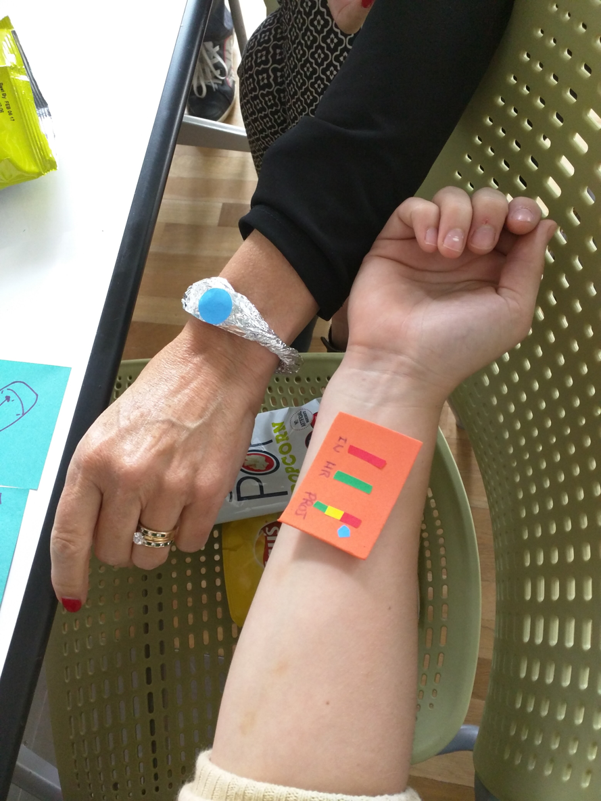

Design
Design Philosophy: To design the technology and interactions of the future consumer health devices.
Tools: Paper sketching, lo-fi prototyping
Participatory Design:
We started out brainstorming by including the client (who now feels like a designer) and created a journey map of her activities throughout the day. We then identified the painpoints on the map and ideated to address that.
Ideation and Brainstorming
As a team we envisioned seperate digital solutions each for the client and her husband but with varying functionalities. The solution on the client's husband should continually monitor his blood sugar level and provide him a feedback about his current consumption of sweet. The device on the client's end will help her track her husband's health data and would notify her if any anomoly exists.
Prototyping:
We envisioned the device for the client's husband to be a bio-implant that would help him visualize the blood suger level and also access historic data. The implant will also show predictions about his sugar consumption and how it will impact the future.
The digital solution on the client's side will be a wearable bracelet that notifies her if her husband has a sudden anomoly in his blood sugar level and also provides access to his historical data . This notification feature will help the client to contact her doctor if required when she is not around her husband.

User Testing:
The prototype was then handed over to the client to be worn and to get a sense of how it would feel to use the technology. The client was very happy with the design at the end that she requested to keep the prototypes for herself to show it to her grand children.
For us, the user testing in this scenario was not about making it more usable since the design is a sci-fi product but it provided us space to think about the emotions and empathy as a tool to iterate the product over to solve her needs.